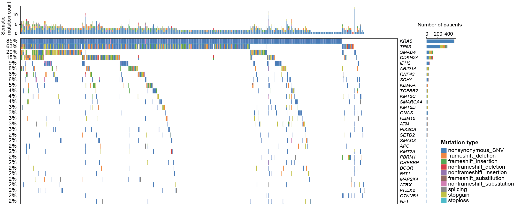

Section 2 Mutational landscape
We carried out a cohort study involving 608 PAAD patients in China and, for each patient, profiled genetic alterations including somatic mutations, pathogenic germline variants and CNV along with several genomic markers, such as tumor mutational burden (TMB), copy number instability (CNI) and somatic signatures. From this Chinese cohort we identified a list of frequently mutated genes, with the top 30 illustrated below.
